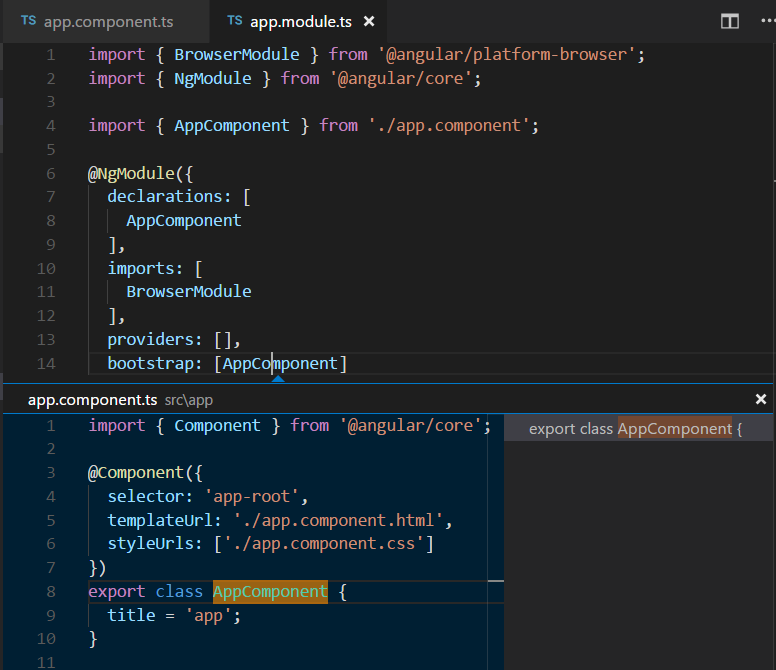

Using Angular in VS Code
Angular is a popular JavaScript library for building web application user interfaces developed by Google. The Visual Studio Code editor supports Angular IntelliSense and code navigation out of the box.

Welcome to Angular
We'll be using the Angular CLI for this tutorial. To install and use the command line interface as well as run the Angular application server, you'll need the Node.js JavaScript runtime and npm (the Node.js package manager) installed. npm is included with Node.js which you can install from here.
Tip: To test that you have Node.js and npm correctly install on your machine, you can type
node --versionandnpm --version.
To install the Angular CLI, in a terminal or command prompt type:
npm install -g @angular/cli
This may take a few minutes to install. You can now create a new Angular application by typing:
ng new my-app
my-app is the name of the folder for your
application. This may take a few minutes to create the Angular
application in
TypeScript
and install it's dependencies.
Let's quickly run our Angular application by navigating to the
new folder and typing ng serve to start the web
server and open the application in a browser:
cd my-app
ng serve
You should see "Welcome to app!!" on
http://localhost:4200 in your browser. We'll
leave the web server running while we look at the application
with VS Code.
To open your Angular application in VS Code, open another
terminal (or command prompt) and navigate to the
my-app folder and type code .:
cd my-app
code .
Syntax highlighting and bracket matching
Now expand the src\app folder and select the
app.component.ts file. You'll notice that VS Code
has syntax highlighting for the various source code elements
and, if you put the cursor on a parentheses, the matching
bracket is also selected.
IntelliSense
As you hover your mouse over text in the file, you'll see that VS Code gives you information about key items in your source code. Items such as variables, classes and Angular decorators are a few examples where you'll be presented with this information.
As you start typing in app.component.ts, you'll
see smart suggestions and code snippets.

You can click the information button (i) to see a
flyout with more documentation.
VS Code uses the TypeScript language service for code
intelligence (IntelliSense) and it has a feature called
Automatic Type Acquisition
(ATA). ATA pulls down the npm Type Declaration files
(*.d.ts) for the npm modules referenced in the
package.json.
Go to Definition, Peek definition
Through the TypeScript language service, VS Code can also
provide type definition information in the editor through
Go to Definition
(kb(editor.action.gotodeclaration)) or
Peek Definition
(kb(editor.action.peekImplementation)). Open the
app.module.ts file and put the cursor over
AppComponent in the
bootstrap property declaration, right click and
select Peek Definition. A
Peek window
will open showing the AppComponent definition
from app.component.ts.

Press kbstyle(Escape) to close the Peek window.
Hello World!
Let's update the sample application to "Hello World". Go back
to the app.component.ts file and change the
title string in AppComponent to
"Hello World".
import { Component } from '@angular/core';
@Component({
selector: 'app-root',
templateUrl: './app.component.html',
styleUrls: ['./app.component.css']
})
export class AppComponent {
title = 'Hello World';
}
Once you save the app.component.ts file, the
running instance of the server will update the web page and
you'll see "Welcome to Hello World!!".
Tip: VS Code supports Auto Save, which by default saves your files after a delay. Check the Auto Save option in the File menu to turn on Auto Save or directly configure the
files.autoSaveuser setting.

Debugging Angular
To debug the client side Angular code, we'll need to install the Debugger for Chrome extension.
Note: This tutorial assumes you have the Chrome browser installed. The builders of the Debugger for Chrome extension also have versions for the Safari on iOS and Edge browsers.
Open the Extensions view
(kb(workbench.view.extensions)) and type 'chrome`
in the search box. You'll see several extensions which
reference Chrome.

Press the Install button for Debugger for Chrome. The button will change to Installing then, after completing the installation, it will change to Reload. Press Reload to restart VS Code and activate the extension.
Set a breakpoint
To set a breakpoint in app.component.ts, click on
the gutter to the left of the line numbers. This will set a
breakpoint which will be visible as a red circle.

Configure the Chrome debugger
We need to initially configure the
debugger. To do so, go to the Debug view
(kb(workbench.view.debug)) and click on gear
button to create a launch.json debugger
configuration file. Choose Chrome from the
Select Environment dropdown. This will create
a launch.json file in a new
.vscode folder in your project which includes
configuration to both launch the website or attach to a
running instance.
We need to make one change for our example: change the port
from 8080 to 4200. Your
launch.json should look like this:
{
"version": "0.2.0",
"configurations": [
{
"type": "chrome",
"request": "launch",
"name": "Launch Chrome against localhost",
"url": "http://localhost:4200",
"webRoot": "${workspaceRoot}"
},
{
"type": "chrome",
"request": "attach",
"name": "Attach to Chrome",
"port": 9222,
"webRoot": "${workspaceRoot}"
}
]
}
Press kb(workbench.action.debug.start) or the
green arrow to launch the debugger and open a new browser
instance. The source code where the breakpoint is set runs on
startup before the debugger was attached so we won't hit the
breakpoint until we refresh the web page. Refresh the page and
you should hit your breakpoint.
You can step through your source code
(kb(workbench.action.debug.stepOver)), inspect
variables such as AppComponent, and see the call
stack of the client side Angular application.
The Debugger for Chrome extension README has lots of information on other configurations, working with sourcemaps, and troubleshooting. You can review it directly within VS Code from the Extensions view by clicking on the extension item and opening the Details view.
Popular Starter Kits
In this tutorial, we used the Angular CLI to create a simple Angular application. There are lots of great samples and starter kits available to help build your first Angular application.
Recipes
The VS Code team has created recipes for more complex debugging scenarios. There you'll find the Chrome Debugging with Angular CLI recipe which also uses the Angular CLI and goes into detail on debugging the generated project's unit tests.
MEAN Starter
If you'd like to see a full MEAN (MongoDB, Express, Angular, Node.js) stack example, look at MEAN.IO. They have documentation and an application generator for a sample MEAN project. You'll need to install and start MongoDB, but you'll quickly have a MEAN application running.
React
React is
another popular web framework. If you'd like to see an example
of React working with VS Code, check out the
Using React in VS Code
tutorial. It will walk you through creating an React
application and configuring the launch.json file
for the
Debugger for Chrome
extension.
Angular Extensions
In addition to the functionality VS Code provides out of the box, you can install VS Code extensions for greater functionality.
Click on an extension tile above to read the description and reviews on the Marketplace.
To find other Angular extensions, open the Extensions view
(kb(workbench.view.extensions)) and type
'angular' to see a filtered list of Angular extensions.
The community has also created "Extension Packs" which bundle useful extensions together (for example, a linter, debugger, and snippets) into a single download. To see available Angular extension packs, add the "extension packs" category to your filter (angular @category:"extension packs").